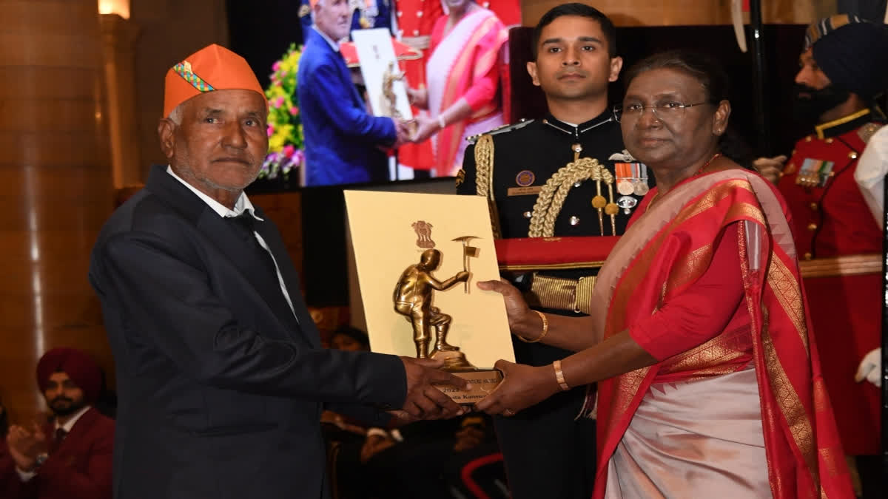

About Savita Kanswal
Born in the small town of Uttarkashi in Uttarakhand, India, Savita’s journey from humble beginnings to becoming a record-breaking mountaineer is nothing short of remarkable. Despite facing societal and financial challenges, she remained steadfast in her pursuit of mountaineering, eventually triumphing over two of the world’s highest peaks – Mount Everest and Mount Makalu – within a mere 16-day span1.
Career Highlights
- Savita set a national record in May 2022 by raising the Flag of India on Mount Everest, the world’s highest peak.
- She climbed Mount Everest (8848 m) on May 12, 2022, achieving this milestone within 16 days.
- On May 28, 2022, she climbed Makalu (8485 m), the world’s fifth-highest peak.
- Under the pre-Everest campaign, Savita successfully climbed five peaks across India, including Trisul.
Awards and Honors

- In the wake of her passing, the nation sought to honor Savita Kanswal’s memory and acknowledge her significant contributions to the world of mountaineering. This recognition came in the form of the Tenzing Norgay National Adventure Award1.
- Posthumously, Savita received the Tenzing Norgay National Adventure Award in January 2024, the highest honor in adventure sports in India.
- The Chief Minister of Uttarakhand announced the renaming of Maneri Inter College after her.
Tragic End
- Savita tragically lost her life on October 4, 2022, in an avalanche at Mount Draupadi Ka Danda -2 peak in Uttarakhand’s Uttarkashi district.
- Following tradition, she was given a ‘jal samadhi’ (water burial), a practice observed in Uttarakhand for unmarried women with no brothers.